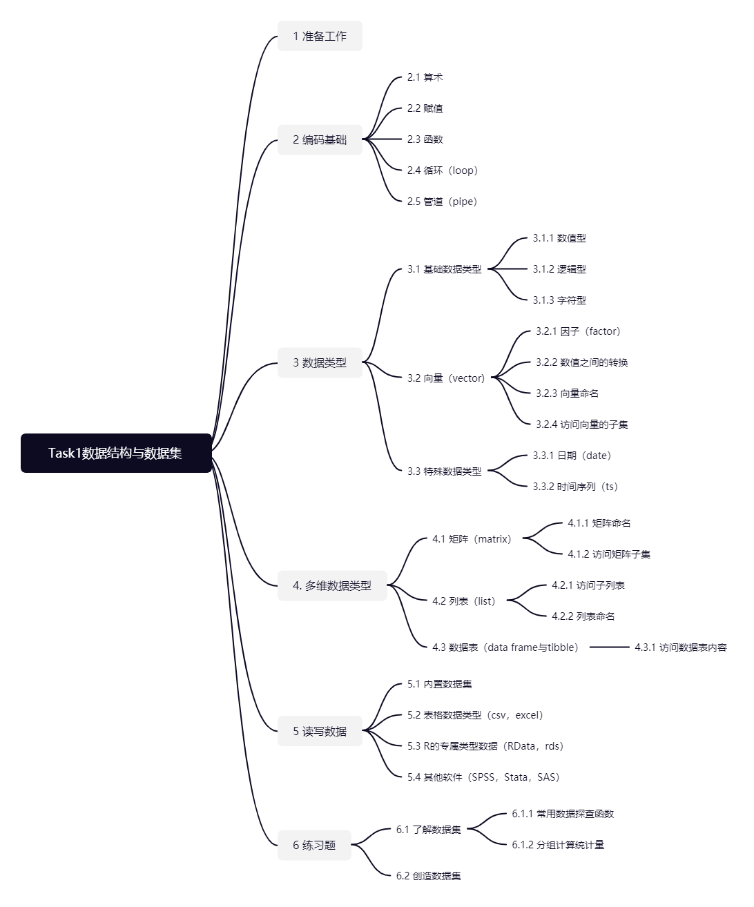

第 1 章 数据结构与数据集

1.1 准备工作
这节组队学习的目的主要是帮助你上手R的基本编程逻辑，了解一些R编程的基本概念，包括各个数据类型和数据集的读取与保存。
在开始我们的学习之前，不要忘记在 R Studio 中切换到组队学习专属的项目，打开一个 R script 文件或者 R Markdown 文件（详见入门篇）。
1.2 编码基础
首先我们来了解一些基本的编码操作。在 R Studio 中想要运行代码可以在控制台 Console 中键入代码后点击回车。这样运行的代码会被保存在当前项目的 .Rhistory 文件中，也可以在 R Studio 界面右上角的 History 面板中找到，但是不会被明确地保存下来作为一个脚本文件。一般只有在我们想要运行一些简单的指令或者计算的时候才会采取这种方式。更常见的是将代码写在脚本文件中，选中相应的代码后点击界面上方的Run或者快捷键（Ctrl + Enter）来运行。
1.2.1 算术
你可以直接运行计算命令。计算符号包括加+、减-、乘*、除/、求幂^以及求余数%%等。值得一提的是开平方根有他自己单独的函数sqrt。
1 + 1## [1] 21 - 1## [1] 01 * 2## [1] 21 / 2## [1] 0.53 %% 2## [1] 12^(1 / 2)## [1] 1.414214sqrt(2)## [1] 1.4142141.2.2 赋值
在 R 里，我们可以为一个“东西”取一个名字，这个“东西”可以是一个值、一个向量、或者一个函数等，这样我们就可以之后再获取存储在这个名字下面的信息。
# 将数字42赋予名叫x的变量
x <- 42
# 在R中运行一个物体的名字
# R将会打印出（print）该物体的值
x## [1] 42在 R 中基础赋值的符号有三种：
- 一个向左的箭头
<-表示将箭头右方的值取名叫做箭头左侧的名字，或者将箭头右侧的值存储在箭头左侧的名字里； - 一个向右的箭头
->表示将箭头左侧的值储存在箭头右侧的名字里； - 一个等号
=表示将箭头右侧的值存储在箭头左侧的名字里（同1）。
在早期的键盘中有一个单独的按键就是向左的箭头，虽然后来的键盘不再设立这个按键，但是使用箭头的编程习惯流传了下来。赋值符号的选择取决于个人习惯，但是我们大多数情况下都推荐使用箭头（尤其是向左的箭头）作为赋值的符号。这是R语言于其他语言不同的地方，有以下原因：
- 箭头明确了赋值方向，这是等号做不到的；
- 等号用在顶层环境中的时候是赋值，用在函数中则是设参（或者叫做在函数层面赋值）。这种二义性不小心区分则可能会引发错误。而等号即使用在函数中也是赋值；
- 箭头可以做到多次赋值（
a <- b <- 42）甚至是不同方向上多次赋值（a <- 42 -> b）（尽量避免！）； - 虽然这次组队学习中不会学到，但是更高级的赋值工具包括
<<-和->>对应向左或向右的箭头； - 同时使用
=与==（判断是否相等）会降低可读性（a <- 1 == 2vsa = 1 == 2）。
总结，凡是赋值都用<-，凡是设参（之后会说到）都用=。
在 R Studio 中可以使用快捷键Alt + -来输入<-，这样就不用每次都点两次键啦。这样还有一个好处，就是 R Studio 会自动识别当前的输入语言，从而选择最佳的赋值符号。大多数情况下这也就是说他会输入R的<-，如果你在 R Studio 里用 Python 的话就会自动变成=啦。
原来作用于单纯数字上的算术运算现在即可用变量名称代替具体的数值。
y <- 21
x + y## [1] 63x <- x + y1.2.3 函数
R是一个非纯函数式编程（Functional Programming）的语言，与你平时可能所熟悉的面向对象程序设计（Object-Oriented Programming）的编程语言（比如 Python）不一样。这意味着在R中，相对于以类（Class）与对象（Object）的思路思考问题，我们要更多地定义函数（Function）以及考虑函数的输入与输出来进行运算。（如果你不知道我在这里说什么，请忽略这段话。）
在R中，所有的运算都是通过函数来达成的。我们可以用和之前一样的赋值方法（<-）来将一个函数存储在一个名字下。请看以下示例：
addone <- function(x = 0) {
x + 1
}这里我创建了一个名为addone的函数，这个函数的作用就是将输入值在函数内部存储在名为x的参数里，在名为x的值上加一，再返回结果。如果没有输入值的话，x的默认值是x = 0。
# 作用在数字上
addone(42)## [1] 43# 作用在变量上
y <- 42
addone(y)## [1] 43如你可见，调用函数的方法就是在函数的名字后边加小括号，再在小括号中输入参数（arguments）。当函数有多个可选参数的时候，建议输入参数的时候使用等号=明确函数名称。这便是之前提到过的等号的设参用法。
addone(x = 42)## [1] 43如果你没有使用小括号而是直接在控制台中运行函数的名字的话，像以前一样，R会直接打印出这个函数的内容，即源代码：
addone## function(x = 0) {
## x + 1
## }
## <environment: 0x0000000015e84bc8>当你完成了一个复杂的计算，不要忘记把结果储存在一个名字下，否则结果不会保存下来，只会在控制台中一闪而过。
y <- 42
y_plusone <- addone(y)1.2.4 循环（loop）
使用代码很重要的一个原因是可以重复进行多次相同或有规律的操作，也就是循环了。
R 中的循环函数包括for，while，和repeat。在这里我们简单用一个例子来介绍一下最灵活的for循环：
x <- 0
for(i in 1:3){
x <- x + i
print(x)
}## [1] 1
## [1] 3
## [1] 6在最开始的时候，我们让x等于0。在接下来进行的循环操作中，紧跟在for之后的小括号里给出了每个回合当中会变化的参数，叫做i。i后边的in之后给出的是参数i在回合中的可能取值，也就是从1到3的正整数。最后大括号中给出每个回合的操作，在x上加上i的值，重新取名为x，再打印出来。
整个流程下来：
第一个回合x一开始是0，在第一个回合中i是1，经过计算赋值x变成了1，打印后进入第二个回合；
第二个回合x一开始是1，在第二个回合中i是2，经过计算赋值x变成了3，打印后进入第二个回合；
第三个回合x一开始是3，在第三个回合中i是3，经过计算赋值x变成了6，打印后结束循环。
1.2.5 管道（pipe）
如果我们想要对一个对象进行多个函数的操作，比如说想要使用我们刚刚定义的addone函数，还有新定义的addtwo，addthree，我们可以按照普通调用函数的方法一个套一个：
addone <- function(x) x+1
addtwo <- function(x) x+2
addthree <- function(x) x+3
x <- 0
addthree(addtwo(addone(x)))## [1] 6在这种常规的方法下，函数运行的顺序，和我们读函数的顺序，都是从内到外的。比如在上边的操作中，我们先用了addone给0加1，又用了addtwo，最后用了addthree。这样的坏处也是显而易见的，即可读性很差。想象一下你要对一个数据列表连续使用十几个函数，每个函数里都有其自己不同的参数，这么一系列操作如果用这个常规方法的话必然会使代码变成一个很难读的庞然大物。
magrittr包提供了另一种使用函数的办法，即使用%>%这个符号函数进行方法链（method chain）的操作。你可以把这个符号叫做管道。如果我们用管道来重写之前的一连串操作，代码会变成：
# tidyverse也包含了管道符号
library(tidyverse)
x %>%
addone() %>%
addtwo() %>%
addthree()## [1] 6这个符号的具体含义简单来说是“将上一步运行的结果放在下一步运行的函数的第一个参数的位置上”。在这个例子中，x被当作addone的第一个参数被加一。addone的运行结果被当成下一步addtwo的第一个参数被加二，其运行结果最后被当成addthree的第一个参数被加三，最终得到结果。
经过了管道的改写之后，函数的可读性得到了大幅上升。从常规的“从内到外”读法，变成了“从上到下，从左到右”。虽然需要运行额外R包，但是由于符合阅读习惯和数据清洗流程的特点，管道在数据分析的领域被普遍使用。
关于管道符号的具体使用规则详见?`%>%`。
1.3 数据类型
1.3.1 基础数据类型
在R中有五种基础数据类型，包括三个数值型、一个逻辑型和一个字符型。
1.3.1.1 数值型
数值型数据包括三种，分别是默认的实数数值型数据（double）、整数类型（integer）和复数类型（complex）：
# numeric
a <- 132.2345
# Inf
# integer
b <- 132L
# complex
c <- 2 + 3i实数数值型数据每个值占用8个字节（bytes），是最常见的数值型数据。如果没有做特别处理，我们平时见到的数字都是这个类型的——单纯的数字罢了。
整数类型，正如它的名字一样，只包含整数而没有小数部分。我们可以在整数末尾加上一个大写的L来表示这个数字是一个整数类型的数据。如果没有加大写的L的话，虽然只输入了一个整数，但是这个整数是实数数值类型的整数，而不是整数类型。他们的区别在于实数数值类型的整数和和非整数一样都占用8个字节，而整数类型只占用4个字节。平时用起来区别不大，但是如果数据量比较大且都是整数的话推荐使用整数类型来节约空间。
复数类型便是包含复数部分的数值类型了。只要在实数部分后边加上虚数部分并且用小写字母i来代表虚数单位，这个数值便是复数类型。鉴于数据分析领域基本不会涉及复数，我们在这次组队学习不去讨论复数类型。
判断一个数值是什么类型，可以用typeof():
typeof(a)## [1] "double"typeof(b)## [1] "integer"typeof(c)## [1] "complex"1.3.1.2 逻辑型
逻辑型（logical）数据只包括两个值，TRUE（T） 和 FALSE（F）:
TRUE## [1] TRUET## [1] TRUEFALSE## [1] FALSEF## [1] FALSE尽管一个字母的缩写和全拼效果是一样的，但是一个好的编程习惯是始终使用大写全拼的TRUE和FALSE。这样可以增加可读性，也会减小因为命名产生的使用错误。比如，有些时候涉及到时间序列时，一些用户喜欢将最大时序上限命名为T，这个时候就不能用T来代表TRUE了。
说到逻辑型数据，就不得不说到逻辑算符。这里我们只考虑三个，分别是“和”（and）&、“或”（or）|、“否”（not）!。
TRUE & FALSE## [1] FALSETRUE | FALSE## [1] TRUE!TRUE## [1] FALSE1.3.1.3 字符型
字符型数据（character）可以总结为“任何带引号的值”。它可以是一个字母、一个单词、一句话、或者任何用引号框起来的数值或逻辑。
string_a <- "A"
string_b <- "letter"
string_c <- "This is a sentence."
string_d <- "42"
string_e <- "TRUE"在输入的时候，即使是数字或者逻辑型的TRUE和FALSE，只要加上了引号，他们就变成了字符型的数据，而不再带有数值型或逻辑型的特性。要注意区分。
typeof(42)## [1] "double"typeof("42")## [1] "character"typeof(TRUE)## [1] "logical"typeof("TRUE")## [1] "character"字符型是最“自由”的数据类型，因为它的内容可以是任何字符，任何其他的数据类型也可以转化为字符型数据。比如你可以把一个数值型数据加上引号来当作字符型数据来解读。但是反过来却不可以：你没有办法把一个字符当作数字来解读。数据之间的转化我们会在第3.2.2节讲到。
在R中，单引号（'）和双引号（"）是等效的，但是我们推荐大多数情况下使用双引号，只有在引号内有双引号的时候使用单引号去引双引号（比如' This is an "example". '）。这主要是为了帮助其他语言（C, C++, Java等）的用户区分单双引号的细微区别。在C语言里，单双引号不是等效的。R语言中的（单）双引号大致是与C语言中的双引号等效的。
1.3.2 向量（vector）
这里说到的向量主要指基础向量类型（atomic vector）。 向量是由一组相同类型的值组成的一维序列。根据值的类型不同，我们会有不同类型的向量。 相对应之前的数值、逻辑和字符型的基础数据类型，这里我们也有数值、逻辑和字符型的向量类型。
vec_num <- c(1, 2, 3)
vec_log <- c(TRUE, FALSE, TRUE)
vec_cha <- c("A", "B", "middle school")使用函数c()来构建向量。可以进行向量上的运算，而不用一个一个值地单独去计算。
vec_A <- c(1, 2, 3)
vec_B <- c(3, 5, 6)
vec_A + vec_B # 等同于 c(1 + 3, 2 + 5, 3 + 6)## [1] 4 7 9!vec_log## [1] FALSE TRUE FALSE也有相应的作用于向量上的函数，可以计算相应的统计量。比如求和的sum、求方差的var、平均值的mean等：
sum(vec_A)## [1] 6var(vec_A)## [1] 1mean(vec_A)## [1] 21.3.2.1 因子（factor）
除了之前提到的基础数据类型组成的向量外，还有一类重要的的向量类型便是因子，可以使用函数factor和c组合来创建。
vec_fac <- factor(c("male", "female", "male", "female", "female"))
vec_fac## [1] male female male female female
## Levels: female male从表面上看，一个因子向量和字符向量很相似，都是一系列带引号的字符组成的。它与字符向量的主要区别在于因子向量的独特值（levels）是有限个数的。因子向量的所有元素都是由这些有限个数的独特值组成的。比如在以上的例子中，虽然vec_fac由五个元素组成，但是只包括了两个独特值“male”和“female”。
# 查看因子向量的独特值
levels(vec_fac)## [1] "female" "male"你也可以用函数ordered或者factor里的ordered = TRUE参数（argument）创造一个有内在顺序的因子向量，内在顺序可以用levels参数来手动设定：
educ <- ordered(
c("kindergarten", "primary school", "middle school",
"primary school", "middle school", "kindergarten"),
levels = c("kindergarten", "primary school", "middle school")
)
# 等同于
educ <- factor(
c("kindergarten", "primary school", "middle school",
"primary school", "middle school", "kindergarten"),
ordered = TRUE,
levels = c("kindergarten", "primary school", "middle school")
)
educ## [1] kindergarten primary school middle school primary school middle school
## [6] kindergarten
## Levels: kindergarten < primary school < middle school实质上，R 把因子向量当作整数型数值向量来对待。这也就意味着用因子向量替代字符向量可以剩下很多字节。
1.3.2.2 数值之间的转换
不同的向量/数据类型之间是可以互相转换的。相互转换的可行性取决于数据类型的复杂程度（或者说自由程度）。按照自由程度将已经提到的几种向量以从高到低的排序可得
字符>数值>逻辑
在数值型内的排序从自由度高到低为
复数>实数>整数
越靠近字符的类型越“自由”，自由度低的类型可以（随意）转化为同层或自由度更高的类型。字符型向量是最自由的：它可以包含任何原始值，其他任何类型都可以转化为它。我们以一个最受限制的逻辑向量为例，在这里展示如何根据这个排序使用几个常见的类型转换函数：
vec_loc <- c(TRUE, FALSE, TRUE)
# 从逻辑型到数值型
vec_num <- as.numeric(vec_loc)
vec_num## [1] 1 0 1# 从数值型到字符型
vec_cha <- as.character(vec_num)
vec_cha## [1] "1" "0" "1"# 从逻辑型到字符型
vec_cha2 <- as.character(vec_loc)
vec_cha2## [1] "TRUE" "FALSE" "TRUE"## 倒序
# 从字符型到数值型
as.numeric(vec_cha)## [1] 1 0 1# 从字符型到逻辑型
as.logical(vec_cha2)## [1] TRUE FALSE TRUE# 从数值型到逻辑型
as.logical(vec_num)## [1] TRUE FALSE TRUE这里我们可以看到逻辑型的TRUE和FALSE实际上对应数值型的1和0。
从一个低自由的类型可以随便转化到高自由的类型，但是反过来，从一个高自由的类型要转化到一个低自由的类型必须要符合一些特定值。比如：
- 从字符型转化到数值型的时候，字符的值一定要符合数字的格式；
- 从数值型转化到逻辑型，0会转化为
FALSE，其他数值会转化为TRUE； - 从字符型转化到逻辑型，字符的值只能是
TRUE和FALSE。
如果不符合这个规则的话，会得到NA。NA是“Not Available”的缩写，即所谓的缺失值。缺失值的处理在下一篇《数据清洗与准备》会讲到。
# 产生缺失值
as.logical(c("some", "random", "strings"))## [1] NA NA NA因子型是一个相对特殊的类型，它可以和数值型与字符型相互转换。
vec_fac <- factor(c("male", "female", "male", "female", "female"))
# 从因子型到数值型
vec_num <- as.numeric(vec_fac)
vec_num## [1] 2 1 2 1 1# 从因子型到字符型
vec_cha <- as.character(vec_fac)
vec_cha## [1] "male" "female" "male" "female" "female"# 从字符型到因子型
as.factor(vec_cha)## [1] male female male female female
## Levels: female male# 从整数型到字符型
as.factor(vec_num)## [1] 2 1 2 1 1
## Levels: 1 2正如之前所说，R内部将因子变量当作整数变量来处理，这也就是为什么一个看上去像是字符的东西可以被变成数值。 需要注意的是，把因子型转化为其他类型的时候会丢失一定的信息：
- 因子向量变成字符向量会丢失独特值的信息；
- 因子向量变成数值型的时候会丢失字面信息，只会保留独特值的编码，即根据独特值排序的正整数。
1.3.2.3 向量命名
除了向量自己的名字，我们也可以给向量里的每个元素一个名字。
# 先命名向量
# 再命名向量的元素
vec <- c(1, 2, 3)
names(vec) <- c("A", "B", "C")
vec## A B C
## 1 2 3# 或者
# 创造向量的时候命名向量的元素
vec <- c(A = 1, B = 2, C = 3)
vec## A B C
## 1 2 31.3.2.4 访问向量的子集
三种截取子集的符号：[、[[ 和 $（其中$不能用在基础向量上）。
六种截取向量子集的方法：
- 正整数：根据元素的序号提取元素；
- 负整数：根据元素的序号去除元素；
- 和向量长度一样的逻辑向量：将逻辑向量的元素与向量元素一一对应，
TRUE选择该元素，FALSE去除该元素； - Nothing：选择原向量；
- 零（0）：什么都不选择；
- 字符向量：选择根据元素名字选择元素。
使用[ 作为选取符号的示例：
vec <- c(a = 1.2, b = 5.6, c = 8.4, d = 9.5)
# 1. 正整数
vec[c(1,3)]## a c
## 1.2 8.4# 2. 负整数
vec[c(-1,-3)]## b d
## 5.6 9.5# 3. 逻辑向量
vec[c(TRUE, FALSE, FALSE, TRUE)]## a d
## 1.2 9.5# 4. Nothing
vec[]## a b c d
## 1.2 5.6 8.4 9.5# 5. 零
vec[0]## named numeric(0)# 6. 字符向量
vec[c("a", "c")]## a c
## 1.2 8.4[[ 在向量的场景里只能选择一个元素，而不是像[ 一样选择一个子集：
# 可以
vec[[1]]## [1] 1.2vec[1]## a
## 1.2vec[c(1, 3)]## a c
## 1.2 8.4# 不可以
vec[[c(1, 3)]]## Error in vec[[c(1, 3)]]: attempt to select more than one element in vectorIndex正是因为这个原因，我们提倡在只选择一个元素的时候多使用[[而不是[。这样在函数产生预期外的行为，选择多余一个元素的时候可以及时被错误信息提醒。
1.3.3 特殊数据类型
1.3.3.1 日期（date）
R中有蕴含日期的特殊类型Date，有日期-时间类型的POSIXct和POSIXlt。但在这一节我主要想介绍一下专注于日期处理的包lubridate。
library(lubridate)日期的本质实质上只是数字罢了，但是日期也有特殊的计算方式，特殊的进制。比如一个月有可能有30天或31一天，多少天进一个月也需要相应变化。lubridate包中的年月日ymd函数就是用来帮助解决这个问题的：
sevenseven <- ymd("2021-07-07")
sevenseven## [1] "2021-07-07"typeof(sevenseven)## [1] "double"class(sevenseven)## [1] "Date"注意这里打印出来的日期是符合阅读习惯的年月日，但是属于Date的class，又是double的类别，也就意味着可以把这个日期当作一个单纯的数来计算。比如七月七日加上一天就是七月八日：
sevenseven + 1## [1] "2021-07-08"七月七日加上一个月就是八月七日：
sevenseven + months(1)## [1] "2021-08-07"年月日ymd函数所做的只是把输入的字符串自动识别并输出日期格式的数值，只要输入的字符串符合“年月日”的类似格式顺序。如果字符串不是年月日的格式，也没关系，lubridate也提供相应的 月年日myd，日月年dmy，月日年mdy，日年月dym，甚至是 年季yq 的函数。
lubridate的更多用法详见lubridate主页。
1.3.3.2 时间序列（ts）
时间序列作为一种有自相关性质的特殊数据类型，在R中也是可以分开处理的。制造时间序列的函数叫做ts，也就是 time series 的缩写：
xts <- ts(rnorm(12), start = c(2021, 1), frequency = 4)
xts## Qtr1 Qtr2 Qtr3 Qtr4
## 2021 1.09045039 0.08268216 0.20798636 1.30065672
## 2022 -0.47836458 1.34891625 1.22755628 0.43274872
## 2023 0.49595793 2.08228445 0.52394276 0.08736316在这里创造的序列便拥有了时间序列的性质。ts函数的start参数设定了时间序列开始的时间，frequency参数设定了时间序列的周期性。在上面的例子中，我们创造了一个从2021年第一季度开始的，具有季节性的时间序列，跨度三年。我们也有相应的函数可以提取这些时间序列的信息：
# 起始日期
start(xts)## [1] 2021 1# 结束日期
end(xts)## [1] 2023 4# 周期性
frequency(xts)## [1] 4使用时间序列的好处在于我们可以用一些很简单的命令来使用时间序列的模型，比如使用forecast包来用一个 ARIMA 模型对澳大利亚燃气月生产量进行预测：
library(forecast)
gas %>%
auto.arima() %>%
forecast(36) %>%
autoplot()
关于时间序列的分析与预测的更多信息可见tidyverts系列包， forecast包等。
1.4 多维数据类型
之前我们讨论的数据类型都是一个序列（向量），都是一维的数据。在这章里我们会学习二维甚至多于二维的数据类型。
1.4.1 矩阵（matrix）
在R中的矩阵和数学概念上的矩阵很相似。在数学概念里，矩阵是一个按照长方阵列排列的数字集合，它有着固定的行数和列数。在R里，矩阵是一个按照长方阵列排列的、有着固定行数和列数的、包含同一类型数据的集合。你可以使用函数matrix来创建一个矩阵：
matrix(1:9, nrow = 3)## [,1] [,2] [,3]
## [1,] 1 4 7
## [2,] 2 5 8
## [3,] 3 6 9在这里，第一个参数是矩阵中数据的具体内容。1:9 是 c(1, 2, 3, 4, 5, 6, 7, 8, 9) 的一个缩写，用于创建间隔为1的整数序列。
第二个参数告诉R这个矩阵应该有多少行。你也可以使用ncol来告诉R这个矩阵有多少列。默认状态下，R会把数值按照从上到下、从左到右的顺序填充在这个固定行数列数的矩阵里。如果你想让R先从左到右填充（横向按照行填充），则需要将byrow参数设置为TRUE：
matrix(1:9, ncol = 3, byrow = TRUE)## [,1] [,2] [,3]
## [1,] 1 2 3
## [2,] 4 5 6
## [3,] 7 8 9R中的矩阵不局限于数值型矩阵，它只要求包含的数据从属于同一类型：如果是数值型，那每一个格子里都是数值型；如果是字符型，所有值都是字符型数据。
mat_month <- matrix(month.name, nrow = 4, byrow = TRUE)
mat_month## [,1] [,2] [,3]
## [1,] "January" "February" "March"
## [2,] "April" "May" "June"
## [3,] "July" "August" "September"
## [4,] "October" "November" "December"1.4.1.1 矩阵命名
对于一个矩阵来说，主要的命名集中于行名rownames和列名colnames：
# 你可以用这两个函数去更改行名和列名
rownames(mat_month) <- c("Quarter1", "Quarter2", "Quarter3", "Quarter4")
colnames(mat_month) <- c("Month1", "Month2", "Month3")
mat_month## Month1 Month2 Month3
## Quarter1 "January" "February" "March"
## Quarter2 "April" "May" "June"
## Quarter3 "July" "August" "September"
## Quarter4 "October" "November" "December"# 也可以用这两个函数去获取行名和列名
rownames(mat_month) ## [1] "Quarter1" "Quarter2" "Quarter3" "Quarter4"colnames(mat_month) ## [1] "Month1" "Month2" "Month3"# 或者用一个函数获取所有维度的名称
dimnames(mat_month)## [[1]]
## [1] "Quarter1" "Quarter2" "Quarter3" "Quarter4"
##
## [[2]]
## [1] "Month1" "Month2" "Month3"1.4.1.2 访问矩阵子集
和在向量里一样，访问矩阵的子集也可以用[或者[[。区别在于矩阵中我们有两个维度，所以需要同时给定两个维度的坐标：
# 访问矩阵中第1行第2列格子的元素
mat_month[[1, 2]]## [1] "February"# 在逗号前不输入数字的时候
# 根据列号截取整列
mat_month[, 2]## Quarter1 Quarter2 Quarter3 Quarter4
## "February" "May" "August" "November"# 在逗号后不输入数字的时候
# 根据行号截取整行
mat_month[1, ]## Month1 Month2 Month3
## "January" "February" "March"# 如果有行名和列名的话
# 也可以用字符串来截取特定范围
mat_month[["Quarter1", "Month3"]]## [1] "March"1.4.2 列表（list）
列表是R中比较基础的数据类型中最灵活的类型。它和向量或者矩阵不一样，在一个列表中可以储存各种不同的基本数据类型。你既可以存三个数字，也可以把数值型、字符型、逻辑型混合：
list(1, 2, 3)## [[1]]
## [1] 1
##
## [[2]]
## [1] 2
##
## [[3]]
## [1] 3list(1, "lol", TRUE)## [[1]]
## [1] 1
##
## [[2]]
## [1] "lol"
##
## [[3]]
## [1] TRUE列表甚至可以储存列表本身，也就意味着你可以一层套一层地设置列表。夹杂其他各种类型，就可以创造一个庞然大物：
stuff <- list(
list(
1:12,
"To be or not to be",
c(TRUE, FALSE)),
42,
list(
list(
ymd("2021-07-07"),
"remembrance"),
2L+3i)
)
stuff## [[1]]
## [[1]][[1]]
## [1] 1 2 3 4 5 6 7 8 9 10 11 12
##
## [[1]][[2]]
## [1] "To be or not to be"
##
## [[1]][[3]]
## [1] TRUE FALSE
##
##
## [[2]]
## [1] 42
##
## [[3]]
## [[3]][[1]]
## [[3]][[1]][[1]]
## [1] "2021-07-07"
##
## [[3]][[1]][[2]]
## [1] "remembrance"
##
##
## [[3]][[2]]
## [1] 2+3i1.4.2.1 访问子列表
列表同样可以用中括号来访问子列表。单个中括号[和两个中括号[[的区分在列表中特别重要。简单来说，单个中括号返回的列表元素类型还是列表，双中括号返回的列表元素是它本身的类型。想要返回多个子列表，就只能用单括号了，因为元素本身的类型不允许多个类型在一个序列中保存。
# 返回前两个子列表
stuff[1:2]## [[1]]
## [[1]][[1]]
## [1] 1 2 3 4 5 6 7 8 9 10 11 12
##
## [[1]][[2]]
## [1] "To be or not to be"
##
## [[1]][[3]]
## [1] TRUE FALSE
##
##
## [[2]]
## [1] 42# 返回第一个子列表中的第二个子列表
stuff[[1]][[2]]## [1] "To be or not to be"1.4.2.2 列表命名
列表的维度，或者说层数可是比矩阵多多了，这也就意味着，列表中可以命名的地方多多了。
# 给列表的顶层三个列表命名
names(stuff) <- c("I", "II", "III")
# 给列表的第一个列表里的三个子列表命名
names(stuff[[1]]) <- c("I", "II", "III")如果列表有名字，自然可以用包含名字的字符串获取子列表。
# 访问名为“I”的列表中名为“II”的子列表
stuff[["I"]][["II"]]## [1] "To be or not to be"之前我们一直没有使用过美元符号$来获取子集，列表提供了一个最佳的展示场景，以下这行代码可以起到于上一行代码一样的效果，而不用加各种括号和引号：
stuff$I$II## [1] "To be or not to be"1.4.3 数据表（data frame 与 tibble）
数据表将是进行数据分析的时候接触的最多的数据类型了。一个数据表（data frame）的本质是一个列表（list），但是采取了矩阵（matrix）的展示形式：
df <- data.frame(x = 1:12, y = month.abb, z = month.name)
df## x y z
## 1 1 Jan January
## 2 2 Feb February
## 3 3 Mar March
## 4 4 Apr April
## 5 5 May May
## 6 6 Jun June
## 7 7 Jul July
## 8 8 Aug August
## 9 9 Sep September
## 10 10 Oct October
## 11 11 Nov November
## 12 12 Dec December数据表的每一列是一个子列表。将几个长度相同的子列表并排放在一起，就组成了一个长方形的矩阵形式。这种特殊的处理使得数据表包含了两种数据形式的优势。列与列之间可以使用不同的基础数据类型，也就是说一列的数据是数值型的数据，下一列数据可以是字符型的数据。长方形的形状保证了列与列之间的数值是一一对应的，每一行都是一个观察量。这很符合日常会遇到的数据的形式。
tibble是tidyverse系列包中的tibble包提供的一种数据形式。使用tibble比较明显的好处是，当你把tibble打印在控制台里的时候，它有一个更干净直观的打印方式。与 data frame 试图打印所有的行、一股脑把所有信息扔给你不同，tibble 默认只会打印前几行给你一个数据长什么样的感觉，还会告诉你每一列的数据是什么类型的：
tb <- tibble(a = 1:100, b = 101:200)
tb## # A tibble: 100 x 2
## a b
## <int> <int>
## 1 1 101
## 2 2 102
## 3 3 103
## 4 4 104
## 5 5 105
## 6 6 106
## 7 7 107
## 8 8 108
## 9 9 109
## 10 10 110
## # ... with 90 more rows除了看起来好看以外，tibble在原始数据表的基础上保留了有用的功能，去除了多余的功能。它干得更少，比如它不会自发修改变量类型或变量名字，也不会做部分匹配；同时它抱怨得更多，比如当一个变量不存在的时候就会触发错误信息。这样用户就能及早发现错误，不会等到代码堆成小💩山。
1.4.3.1 访问数据表内容
既然看上去像矩阵，听起来像列表，那就应该可以用适用于矩阵和列表的方法访问数据表元素。事实上也的确是这样：
# 访问数据表名为x的列
df[["x"]]## [1] 1 2 3 4 5 6 7 8 9 10 11 12df$x## [1] 1 2 3 4 5 6 7 8 9 10 11 12# 访问第一行第二个数值
df[1, 2]## [1] "Jan"# 访问tibble第2列
tb[, 2]## # A tibble: 100 x 1
## b
## <int>
## 1 101
## 2 102
## 3 103
## 4 104
## 5 105
## 6 106
## 7 107
## 8 108
## 9 109
## 10 110
## # ... with 90 more rows# 访问tibble第1行第2列的数值
tb[1, 2]## # A tibble: 1 x 1
## b
## <int>
## 1 101tb$a
#太长了还是不显示了吧tibble 的另一个特性是其访问的子列表也是tibble类型的数据表，即使是用单引号返回一个格子的元素。
关于tibble更多信息，详见tibble主页。
1.5 读写数据
这一章我们主要讨论根据不同数据保存方式区分的读写数据的方法。
1.5.1 内置数据集
R本身和一些R包都会有内置的数据集。使用data命令来查看、使用可用数据集。
# 查看R本身自带的数据集
data()
# 查看某一R包自带的数据集
data(package = "dplyr")# 载入AirPassengers数据集
data("AirPassengers")
glimpse(AirPassengers)## Time-Series [1:144] from 1949 to 1961: 112 118 132 129 121 135 148 148 136 119 ...1.5.2 表格类型数据（csv, excel)
h1n1 流感问卷数据储存在名为 “h1n1_flu.csv” 的文件中，我们会在下一篇《数据清洗与准备》中用到。假设 “h1n1_flu” 有不同的储存类型，我们列举一些读写数据表类型数据的方法。
# 读取csv文件
library(readr)
h1n1_flu <- read_csv("h1n1_flu.csv")
# 保存csv文件
write_csv(h1n1_flu, "h1n1_flu.csv")
# 读取excel文件
library(readxl)
# 自动识别文件后缀
h1n1_flu <- read_excel("h1n1_flu.xls")
# 读取xls文件
h1n1_flu <- read_xls("h1n1_flu.xls")
# 读取xlsx文件
h1n1_flu <- read_xlsx("h1n1_flu.xlsx")不建议在R中直接编辑 excel 文件，csv 文件应该满足日常所需了。如果有编辑 excel 文件的需求，可以看看openxlsx包。
1.5.3 R的专属类型数据（RData, rds）
有一些数据存储方式是R中独有的。我们在这里讨论两类。一类是 rds 文件，一类是 RData 文件。
- rds 文件储存一个R中的对象。这个对象不一定是四四方方的数据表，而可以是任何形式，包括复杂的列表等。因为他储存的是一个对象，所以读取的时候也是读取出来一个对象，需要被保存在一个名字下。
- RData 储存的是一个或多个、任意结构的、带有自己名字的对象。读取的时候会将储存的对象直接载入当前的环境中，使用的是对象自己的名字，所以不需要再额外起名字。
# 读取
h1n1_flu <- read_rds("h1n1_flu.rds")
# 存储
write_rds(h1n1_flu, "h1n1_flu.rds")
# 读取
load("h1n1_flu.RData")
# 存储
save(h1n1_flu, file = "h1n1_flu.RData")1.5.4 其他软件（SPSS, Stata, SAS）
R也可以直接读取其他软件的数据类型。这里列举使用haven包读写 SPSS 的 sav 和 zsav、 Stata 的 dta、SAS 的 sas7bdat 和 sas7bcat。
library(haven)
# SPSS
read_spss()
write_spss()
# Stata
read_dta()
write_dta()
# SAS
read_sas()
write_sas()1.6 练习题
1.6.1 了解数据集
请使用之前读取的h1n1_flu完成以下任务。
1.6.1.1 常用数据探查函数
请尝试使用以下常用的数据探查函数，挑出两个你最喜欢的描述他们的功能。别忘了可以用?fun查看帮助文档。
glimpse(h1n1_flu)
str(h1n1_flu)
head(h1n1_flu)
tail(h1n1_flu)
View(h1n1_flu)
summary(h1n1_flu)
nrow(h1n1_flu)
length(h1n1_flu$sex)
class(h1n1_flu$sex)
summary(h1n1_flu)
table(h1n1_flu$sex)1.6.1.2 分组计算统计量
h1n1_flu %>%
group_by(sex, employment_status) %>%
summarise(n())## # A tibble: 8 x 3
## # Groups: sex [2]
## sex employment_status `n()`
## <chr> <chr> <int>
## 1 Female Employed 7416
## 2 Female Not in Labor Force 6918
## 3 Female Unemployed 735
## 4 Female <NA> 789
## 5 Male Employed 6144
## 6 Male Not in Labor Force 3313
## 7 Male Unemployed 718
## 8 Male <NA> 674请问上边这几行代码在计算什么？你可不可以使用同样的方法计算一些其他的统计量？别忘了看看帮助文档?summarise。
1.6.2 创造数据集
我们说过数据表的本质是将列表排列在一起，所以数据表就会有列表的性质。而我们又知道列表可以包含任何类型的数据，无论是单个的数值或者是向量、矩阵等。
- 请你创造一个数据表，其中的某一列变量的每一个格子包含的不再是常规的单个数值或者字符串，而是一个向量或者矩阵等多维的数据类型；
- 请你描述一个可以在数据分析时运用此类特性的使用场景。
关于Datawhale
Datawhale 是一个专注于数据科学与AI领域的开源组织，汇集了众多领域院校和知名企业的优秀学习者，聚合了一群有开源精神和探索精神的团队成员。Datawhale 以“for the learner，和学习者一起成长”为愿景，鼓励真实地展现自我、开放包容、互信互助、敢于试错和勇于担当。同时 Datawhale 用开源的理念去探索开源内容、开源学习和开源方案，赋能人才培养，助力人才成长，建立起人与人，人与知识，人与企业和人与未来的联结。 本次数据挖掘路径学习，专题知识将在天池分享，详情可关注 Datawhale：